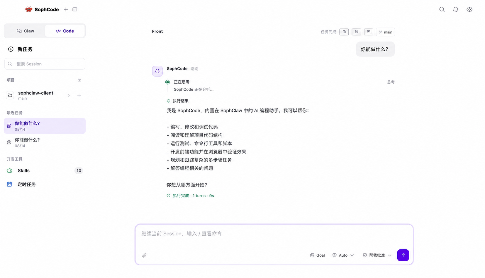

Sophclaw 快问快答：这款能跨会话记住你的 AI 到底好不好用
整理一篇关于 Sophclaw 的快问快答。从记忆机制、三种模式到多 Agent 协同和远程可控，把新手最关心的问题一次讲透。
整理一篇关于 Sophclaw 的快问快答，把新手最容易卡住的点直接了当讲清楚。
Sophclaw 是什么？一句话能说清吗？
是一个能持久记住你的偏好和历史交互的 AI Agent 框架。普通聊天 AI 换个窗口就失忆，Sophclaw 把核心偏好和历史结论写进持久化的记忆文件，下次会话自动加载恢复——官方说的"越用越懂你"就是靠这套机制。它的定位是开发者和重度 AI 用户的个人工作助手，不是普通问答机器人。目前它的官网上有发布的 PC 客户端和命令行版本，安装包从下载拿。
谁在用 Sophclaw？它适合什么场景？
适合两类人。开发者：需要 AI 帮你读写文件、执行终端命令、跑脚本，而且这些操作之间需要记住你的习惯。重度 AI 用户：已经不满足于单次对话问答，想要一个"长期搭档"——知道你喜欢什么格式、常用什么工具、上次聊到哪里。反过来说，如果你只是偶尔问个问题、不介意每次重新说明背景，那 Sophclaw 可能太重了，普通聊天机器人够用。
三种模式怎么选？快速回答、任务执行、StepClaw 小龙虾模式
这是新手最纠结的问题。快速回答是创意类问答，AI 直接给答案不做操作，适合头脑风暴、文案起草。任务执行是单 Agent 干活，AI 会动文件、跑命令，适合一条指令能做完的事。StepClaw 小龙虾模式是多 Agent 协同，把复杂任务拆成多个子任务，每个子任务由独立 Agent 负责、可以并行执行。实用判断标准：这条指令让一个人来做，是一次能做完的事，还是需要分阶段分角色的项目？前者用任务执行，后者上小龙虾。

记忆机制到底是什么样的？怎么保证不会"串话"？
核心是四个分层管理的 md 文件。SOUL.md 存 Agent 的核心身份和人设，永久不变，由你主动设定。MEMORY.md 存长期记忆——你的偏好、历史交互结论、关键信息，Agent 会自动往里面写，你也可以手动编辑。AGENTS.md 存工作规则，告诉 Agent 什么能做什么不能做。TOOLS.md 是动态的工具清单。每次新会话开始，Agent 自动读取 SOUL 和 MEMORY，恢复上下文。还有个重要设计：多个 Agent 共用一个 Sophclaw 实例时，每个 Agent 必须有独立的 workspace 目录，飞书 Agent 处理过的对话钉钉 Agent 不会"记得"，各自独立互不干扰。具体怎么配置，查一下Sophclaw文档就清楚。
多 Agent 隔离有必要吗？什么时候需要？
如果只有一个 Agent 只用一个渠道，完全没必要——保持简单反而更好。但一旦涉及不同人群、不同权限、不同人设，隔离就成了刚需。比如你有一个主助手管日常、一个飞书群助手管内部协作、一个客服助手对外响应客户，这三个 Agent 的记忆、权限、执行产物都应该物理隔离。不隔离会出什么问题？记忆串扰（飞书的对话钉钉能"看到"）、文件覆盖（两个 Agent 写同名文件互相覆盖）、权限越界（客服 Agent 本来只能读文档，结果能删正式目录）。配置就是每个 Agent 在配置文件里指定独立的 workspace 路径，然后各渠道绑定对应的 Agent ID，消息自动路由。
远程协同是干嘛的？本地 Agent 和云端 Agent 怎么配合？
很多开发任务需要本地和云端同时出力——本地有你的代码和数据，云端有 GPU 算力和大模型。远程协同就是让本地 Agent 负责文件读写、终端执行、diff 审阅，云端 Agent 负责大模型推理、GPU 训练、大规模数据处理，两者通过加密 WebSocket 通信。举个例子：你让它用本地脚本训练模型，Sophclaw 会先在 diff 里生成参数适配改动，确认后写入本地，再把脚本推到云端 Agent 用 GPU 跑，结果实时回传，全程你只需要看进度。安全设计是本地优先——能在本地做的事绝不走云端，只传必要的代码文件和结果，不传整个项目目录。
有什么坑是新手容易踩的？
三个。一、以为 StepClaw 能解决所有问题。小龙虾模式适合长程复杂任务，但简单指令硬拆多 Agent 反而增加复杂度，先用任务执行模式感受节奏再说。二、忘了定期 review MEMORY.md。Agent 自动写入的信息不一定全对，可能把过时或错误的内容写进去，花两分钟扫一眼删掉，不然后面的响应会越来越跑偏。三、多 Agent 不做隔离。觉得麻烦就共用一个 workspace，结果飞书和钉钉的消息互相串、客服 Agent 能看到内部文件，这是安全和体验双重雷区。
和同类产品比，Sophclaw 有什么独有的优势？
持久记忆是核心差异点。市面上不少 Agent 框架能执行任务，但跨会话、跨渠道保留完整记忆的不多——普通框架换个窗口就重新开始，Sophclaw 的工作空间目录就是它的"大脑"，重启、换电脑甚至换渠道，只要目录在就能恢复。多 Agent 隔离和远程协同的分层设计也比同类更扎实：每个 Agent 独立 workspace、本地优先的远程协同、加密通道，这些不是锦上添花的功能而是默认的安全设计。
最后一句：值不值得装？
值得——如果你是开发者或重度 AI 用户，想要一个能长期搭档、越用越懂你的个人助手，Sophclaw 是目前最值得深入用的选择；如果只是偶尔问答的轻量需求，可以先等等看。相关配置样例和资料整理分别放在了GitHub、Gitee和GitCode上，开源备份、国内镜像都有。